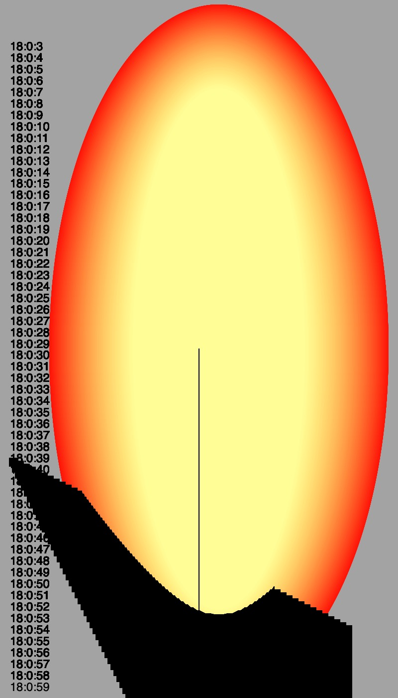
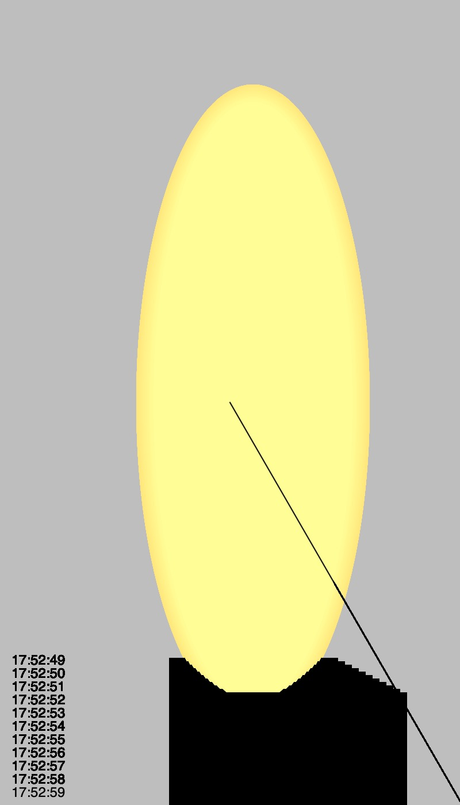
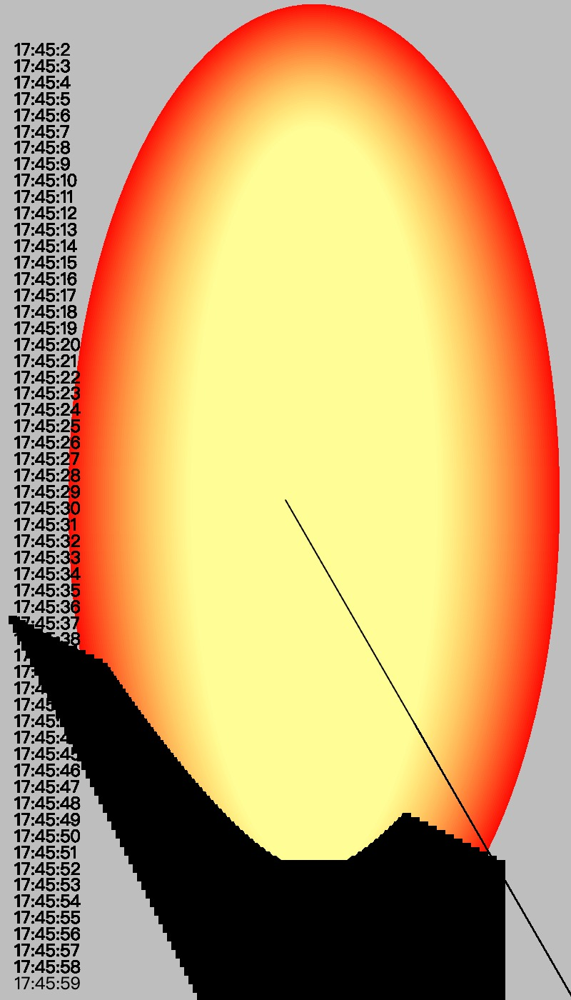
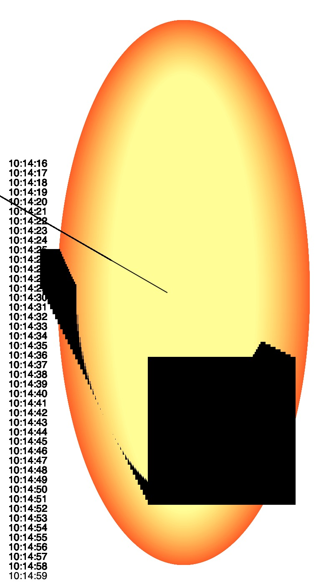

This is an automatic poster generator that changes over time. A poster is generated for every minute that ends. Opening it at different times of the day, you will get different posters.
Examples:
18:00:59
17:52:59
17:45:59
10:14:59




Objective
Design and code an experimental clock that expresses a novel way of tracking time.
Description
Conventional clocks mark seconds, minutes, and hours according to a 24 hour cycle. This segmented, discrete, and regimented approach to parsing time is not universal in terms of capturing and measuring of experience. In this assignment you are tasked with developing an experimental clock. This clock can function in ways that ordinary clocks cannot. In order to complete this assignment you are invited to think of time expansively and alternatively, moving beyond conventional time keeping units. What are other ways in which you can mark the passage of time? What if time itself were turned on its head, driven not by standard time-keeping units, but perhaps subjective, personal, or even irrational organization?
This is an individual assignment. You are welcome to ideate and brainstorm with your peers, but the work you submit should be your own.
Process & Reflection
At this time, I didn't follow my beginning sketch because my sketch was a little boring. So, I watched some tutorials about making a clock with p5.js and learned how to make a regular clock. Then, I tried to use the method in different places, such as making the color, the positions of the rectangle, and the text change according to time.
I noticed this is also a good way to practice. It not only helped me to learn some new skills but also let me learn how to transform formulas in different places.